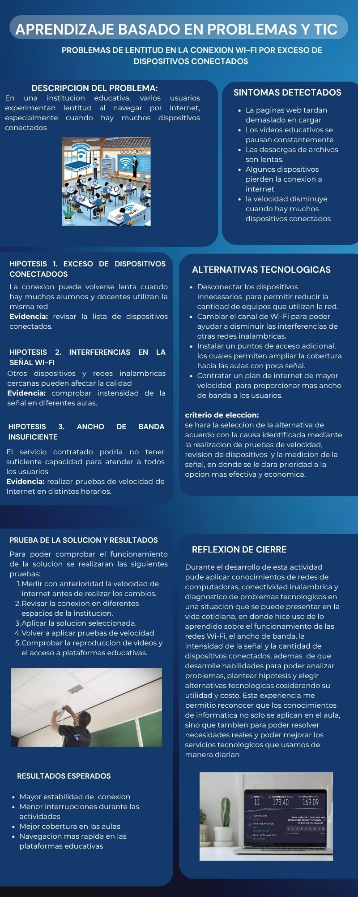

Evidencia · Metodología
Aprendizaje basado en problemas
Material que aborda el aprendizaje a partir de problemas o situaciones contextualizadas, promoviendo la investigación, el análisis, la colaboración y la propuesta de soluciones.